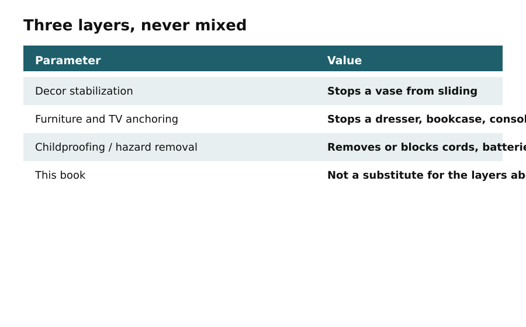

Day 1
Friday Evening: Prep and Quick Wins
In this apartment
In a 1BHK apartment in Pune, Priya has a 9-foot living room filled with delicate decor. With a toddler on the move, she needs to child-proof her space quickly. She sets aside the evening to prepare her home for the weekend.
Furniture and TVs first. Windows next. Decor putty last.
Today's output: a hazard list in three columns — furniture/TV, windows/cords, decor.

Walk the home at child height. Note dressers, bookcases, media consoles, and TVs that need manufacturer-approved anti-tip or TV-anchoring hardware. Note blinds, shades, continuous-loop cords, inner cords, curtain and drapery cords, and window-covering chains. Move cribs and climbable furniture away from windows. Tying a cord higher is not a safety method.

Then list small parts: coins, beads, stones, crystals, tiny figurines, magnets, button batteries, loose hardware. Age band matters: 0–12 months mouth and grab; 1–3 years climb, pull, open drawers, use a drawer as a step; 3–5 years climb more sophisticated furniture and work latches.

At 5 p.m., Priya writes down her three design words: modern, cozy, and functional. She defines her safety thresholds, ensuring no items under 42 inches can tip over and that there are no small parts within reach.
By 6 p.m., she conducts a Heat Map pass, placing red sticky notes on the coffee table and lower shelves, yellow on the bedside table, and green on the high shelves. She assigns risk scores based on tip and pull risks, circling the top five surfaces that need immediate attention.
By 7 p.m., she gathers her Weekend Toolkit, which includes museum putty, gel pads, removable wall strips, and corner guards. She reviews cure times for her adhesives, ensuring anything needing hours to set is scheduled for overnight curing.
Follow the specific product manufacturer's instructions for weight, surface, cure time, and removal.
Do this
- Write down three design words and set safety thresholds.
- Conduct a Heat Map pass with sticky notes on surfaces.
- Gather supplies for the Weekend Toolkit.
Before you move on
- Write three design words
- Set safety thresholds
- Conduct Heat Map pass
- Gather Weekend Toolkit supplies